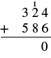
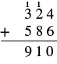

మూలపాఠం అనువాదం · Telugu source translation
నమూనాలు లేకుండా పూర్ణాంకాలను కలపడం
సంఖ్యలను కలపడానికి నమూనాలు ఉపయోగించాం. ఇప్పుడు నమూనాలు లేకుండానే కలపడం నేర్చుకోవచ్చు. ముందుగా ఒక అంకె సంఖ్యల సంకలన ఫలితాలన్నీ మీకు తెలుసని నిర్ధారించుకోండి. పెద్ద సంఖ్యలను కలిపేటప్పుడు ఈ చిన్న సంఖ్యల సంకలన ఫలితాలు అవసరమవుతాయి.
పట్టికను నింపుతున్నట్లు ఊహించండి: సంబంధిత పట్టిక. ఎడమ అంచున ఉన్న ప్రతి వరుస సంఖ్యకు, పై అంచున ఉన్న ప్రతి నిలువు వరుస సంఖ్యను కలపండి. పట్టికలో చూపిన ప్రతి మొత్తం మీకూ వస్తుందో చూడండి. ఇబ్బంది అయితే నమూనాతో చూపండి. ఇంకా తెలియని సంకలన ఫలితాలను అభ్యసించి గుర్తుంచుకోవడం ముఖ్యం. అప్పుడు పెద్ద సంఖ్యలను కలిపేటప్పుడు వాటిని త్వరగా, నమ్మకంగా ఉపయోగించగలుగుతారు.
చిన్న తెరపై 11 నిలువు వరుసలూ చూడటానికి పట్టికను అడ్డంగా జరపండి.
| + | 0 | 1 | 2 | 3 | 4 | 5 | 6 | 7 | 8 | 9 |
|---|---|---|---|---|---|---|---|---|---|---|
| 0 | 0 | 1 | 2 | 3 | 4 | 5 | 6 | 7 | 8 | 9 |
| 1 | 1 | 2 | 3 | 4 | 5 | 6 | 7 | 8 | 9 | 10 |
| 2 | 2 | 3 | 4 | 5 | 6 | 7 | 8 | 9 | 10 | 11 |
| 3 | 3 | 4 | 5 | 6 | 7 | 8 | 9 | 10 | 11 | 12 |
| 4 | 4 | 5 | 6 | 7 | 8 | 9 | 10 | 11 | 12 | 13 |
| 5 | 5 | 6 | 7 | 8 | 9 | 10 | 11 | 12 | 13 | 14 |
| 6 | 6 | 7 | 8 | 9 | 10 | 11 | 12 | 13 | 14 | 15 |
| 7 | 7 | 8 | 9 | 10 | 11 | 12 | 13 | 14 | 15 | 16 |
| 8 | 8 | 9 | 10 | 11 | 12 | 13 | 14 | 15 | 16 | 17 |
| 9 | 9 | 10 | 11 | 12 | 13 | 14 | 15 | 16 | 17 | 18 |
ఒక సంఖ్యకు సున్నను కలిపితే ఏమవుతుందో గమనించారా? ఏ సంఖ్యకైనా సున్నను కలిపితే అదే సంఖ్య వస్తుంది. దీనిని సున్నను కలిపినా సంఖ్య మారని ధర్మం (Identity Property of Addition) అంటాం. సున్నను సంకలనంలో సంఖ్యను మార్చని మూలకం (additive identity) అంటారు.
- ⓐ
- ⓑ
సాధన
చిన్న తెరపై 2 నిలువు వరుసలూ చూడటానికి పట్టికను అడ్డంగా జరపండి.
| ⓐ మొదట కలిపే సంఖ్య సున్న. ఏ సంఖ్యకైనా సున్నను కలిపితే అదే సంఖ్య వస్తుంది. | |
| ⓑ రెండవ కలిపే సంఖ్య సున్న. ఏ సంఖ్యకైనా సున్నను కలిపితే అదే సంఖ్య వస్తుంది. |
ఈ సంకలనాల జతలను చూడండి.
చిన్న తెరపై 2 నిలువు వరుసలూ చూడటానికి పట్టికను అడ్డంగా జరపండి.
క్రమం మారినప్పుడు ఏమవుతుందో గమనించండి. కలిపే సంఖ్యల (addends) క్రమాన్ని తిప్పినా మొత్తం మారదు. దీనిని కలిపే సంఖ్యల క్రమం మారినా మొత్తం మారని ధర్మం (Commutative Property of Addition) అంటారు. ఈ ధర్మం ప్రకారం కలిపే సంఖ్యల క్రమాన్ని మార్చడం వల్ల వాటి మొత్తం మారదు.
కలపండి:
- ⓐ
- ⓑ
సాధన
-
చిన్న తెరపై 2 నిలువు వరుసలూ చూడటానికి పట్టికను అడ్డంగా జరపండి.
ⓐ కలపండి. -
చిన్న తెరపై 2 నిలువు వరుసలూ చూడటానికి పట్టికను అడ్డంగా జరపండి.
ⓑ కలపండి.
కలిపే సంఖ్యల క్రమం మారినా మొత్తం మారలేదని గమనించారా? భాగం ⓑలోని కలిపే సంఖ్యలు భాగం ⓐలోనివే; క్రమం మాత్రమే తారుమారైంది. ఇది గుర్తిస్తే రెండవ మొత్తాన్ని వెంటనే చెప్పవచ్చు. అందువల్ల రెండు మొత్తాలూ సమానమే.
కలపండి:
సాధన
ఒకటి కంటే ఎక్కువ అంకెలున్న సంఖ్యలను కలిపేటప్పుడు వాటిని ఒకదాని కింద మరొకటి నిలువుగా రాయడం సాధారణంగా సులభం.
చిన్న తెరపై 2 నిలువు వరుసలూ చూడటానికి పట్టికను అడ్డంగా జరపండి.
| ఒకట్ల అంకెలు ఒకదాని కింద మరొకటి, పదుల అంకెలు ఒకదాని కింద మరొకటి ఉండేలా సంఖ్యలను నిలువుగా రాయండి. | |
| తరువాత ప్రతి స్థానంలో ఉన్న అంకెలను కలపండి. ఒకట్లను కలపండి: పదులను కలపండి: |
మునుపటి ఉదాహరణలో ఒకట్ల మొత్తమూ పదుల మొత్తమూ ఈ సంఖ్యకంటే తక్కువ: కానీ మొత్తం లేదా అంతకంటే ఎక్కువైతే ఏమవుతుంది? తెలుసుకోవడానికి నమూనాను ఉపయోగిద్దాం. సంబంధిత పటంలో మరియు అనే సంఖ్యల సంకలనాన్ని మళ్లీ చూపించారు.
అన్ని నిలువు వరుసలను చూడటానికి పటాన్ని అడ్డంగా జరపండి.

ఒకట్లను కలుపుదాం: మొత్తం ఒకట్లు వస్తాయి. ఇవి ఒకట్ల కంటే ఎక్కువ. అందువల్ల ఒకట్లను పదిగా మార్పిడి చేయవచ్చు. ఇప్పుడు పదులు, ఒకట్లు ఉన్నాయి. నమూనా లేకుండా రాసేటప్పుడు ఈ మార్పిడిని చిన్న ఎరుపు ను పదుల స్థానపు అంకెల పైన రాసి చూపుతాం.
ఒక స్థానపు నిలువు వరుసలో ఒకే అంకెగా రాయగల అతి పెద్ద మొత్తం మొత్తం దానికంటే ఎక్కువైతే ఎడమవైపు తదుపరి స్థానానికి బదిలీ చేస్తాం (carrying). ఇలా బదిలీ చేయడం అంటే విలువ మారకుండా మార్పిడి చేసి మళ్లీ సమూహాలుగా అమర్చడమే (regrouping). ఉదాహరణకు ఒకట్లను పదిగా, లేదా పదులను వందగా మార్పిడి చేస్తాం.
కలపండి:
సాధన
చిన్న తెరపై 2 నిలువు వరుసలూ చూడటానికి పట్టికను అడ్డంగా జరపండి.
| ఒకే స్థానానికి చెందిన అంకెలు ఒకదాని కింద మరొకటి ఉండేలా సంఖ్యలను నిలువుగా రాయండి. | |
| ప్రతి స్థానంలోని అంకెలను కలపండి. ఒకట్లను కలపండి: | |
| మొత్తంలోని ఒకట్ల స్థానంలో రాయండి. పదుల స్థానానికి పదిని కలపండి. | |
| ఇప్పుడు పదులను కలపండి: మొత్తంలో 11 రాయండి. |
కలపండి:
సాధన
చిన్న తెరపై 2 నిలువు వరుసలూ చూడటానికి పట్టికను అడ్డంగా జరపండి.
| ఒకే స్థానానికి చెందిన అంకెలు ఒకదాని కింద మరొకటి ఉండేలా సంఖ్యలను నిలువుగా రాయండి. | అన్ని నిలువు వరుసలను చూడటానికి పటాన్ని అడ్డంగా జరపండి.  |
| ప్రతి స్థానంలోని అంకెలను కలపండి. ఒకట్లను కలపండి: మొత్తంలోని ఒకట్ల స్థానంలో రాయండి; పదిని పదుల స్థానానికి బదిలీ చేయండి. | అన్ని నిలువు వరుసలను చూడటానికి పటాన్ని అడ్డంగా జరపండి.  |
| పదులను కలపండి: మొత్తంలోని పదుల స్థానంలో రాయండి; వందను వందల స్థానానికి బదిలీ చేయండి. | అన్ని నిలువు వరుసలను చూడటానికి పటాన్ని అడ్డంగా జరపండి.  |
| వందలను కలపండి: వందల స్థానంలో రాయండి. | అన్ని నిలువు వరుసలను చూడటానికి పటాన్ని అడ్డంగా జరపండి.  |
కలపండి:
సాధన
చిన్న తెరపై 2 నిలువు వరుసలూ చూడటానికి పట్టికను అడ్డంగా జరపండి.
| ఒకే స్థానానికి చెందిన అంకెలు ఒకదాని కింద మరొకటి ఉండేలా సంఖ్యలను నిలువుగా రాయండి. | |
| ప్రతి స్థానంలోని అంకెలను కలపండి. | |
| ఒకట్లను కలపండి: మొత్తంలోని ఒకట్ల స్థానంలో రాయండి; పదిని పదుల స్థానానికి బదిలీ చేయండి. | |
| పదులను కలపండి: పదుల స్థానంలో రాయండి; వందను వందల స్థానానికి బదిలీ చేయండి. | |
| వందలను కలపండి: వందల స్థానంలో రాయండి; వేయిని వేల స్థానానికి బదిలీ చేయండి. | |
| వేలను కలపండి: . మొత్తంలోని వేల స్థానంలో రాయండి. |
కలిపే సంఖ్యల్లో అంకెల సంఖ్య ఒకేలా లేకపోతే, ఒకట్ల స్థానం నుంచి ఎడమవైపుకు వెళ్తూ ఒకే స్థానానికి చెందిన అంకెలను జాగ్రత్తగా ఒకదాని కింద మరొకటి అమర్చండి.
కలపండి:
సాధన
చిన్న తెరపై 2 నిలువు వరుసలూ చూడటానికి పట్టికను అడ్డంగా జరపండి.
| ఒకే స్థానానికి చెందిన అంకెలు ఒకదాని కింద మరొకటి ఉండేలా సంఖ్యలను నిలువుగా రాయండి. | |
| ప్రతి స్థానంలోని అంకెలను కలపండి. | |
| ఒకట్లను కలపండి: మొత్తంలోని ఒకట్ల స్థానంలో రాయండి; పదిని పదుల స్థానానికి బదిలీ చేయండి. | |
| పదులను కలపండి: పదుల స్థానంలో రాయండి; వందలను వందల స్థానానికి బదిలీ చేయండి. | |
| వందలను కలపండి: వందల స్థానంలో రాయండి; వేయిని వేల స్థానానికి బదిలీ చేయండి. | |
| వేలను కలపండి: . వేల స్థానంలో రాయండి; పది వేల సమూహాన్ని పది వేల స్థానానికి బదిలీ చేయండి. | |
| పది వేలను కలపండి: . మొత్తంలోని పది వేల స్థానంలో రాయండి. |
ఈ ఉదాహరణలో కలిపే సంఖ్యలు మూడు ఉన్నాయి. ఒకే స్థానానికి చెందిన అంకెలను సరిగ్గా అమర్చినంతవరకు, ఎన్ని సంఖ్యలనైనా ఇదే పద్ధతిలో కలపవచ్చు.
సంపాదకీయ అభ్యాస సహాయం — నిలువుగా కలపడంలో అర్థం, పద్ధతి
ఈ విభాగంలోని వివరణలు, తనిఖీలు, మళ్లీ ప్రయత్నించే ప్రశ్నలు, విస్తృత సాధనలు మూల పాఠ్యానికి వేరుగా చేసిన అసలు జోడింపులు. ఇవి అధికారిక పాఠ్యపుస్తక ప్రశ్నలు లేదా ప్రమాణీకరించిన స్థాయి పరీక్ష కాదు. మూల ప్రశ్నలు, జవాబులు పై పాఠ్యంలో యథావిధిగా ఉంటాయి. ఇక్కడ ప్రతి మూల Try It భాగానికి పూర్తి కారణం ఇచ్చాం.
Original instructional support, not canonical source prose or a validated assessment. Every source Try It is explained. The source uses international comma grouping. In this unit's addition diagrams, small raised digits are carried place-unit counts, not fractions or powers.
ఈ పాఠ్యంలో పదాలు, సంఖ్యలు
పూర్ణాంకాలు (whole numbers) అంటే 0, 1, 2, 3, … . పూర్ణ సంఖ్యలు (integers) అనే సమితిలో వీటితో పాటు −1, −2, … కూడా ఉంటాయి; ఈ రెండు పేర్లకు ఒకే అర్థం ఇవ్వకండి. సంకలనం (addition), కలిపే సంఖ్యలు (addends), మొత్తం (sum) అనే పదాలను ఉపయోగిస్తాం. గణిత రాత (expression) 17+26కు విలువ 43; 17+26=43 అనే సమానత్వాన్ని తెలిపే వాక్యం (equation) ఆ విలువను చెబుతుంది.
“సున్నను కలిపినా సంఖ్య మారని ధర్మం”, “కలిపే సంఖ్యల క్రమం మారినా మొత్తం మారని ధర్మం” అనేవి Identity Property of Addition, Commutative Property of Additionలకు అర్థం చెప్పే తెలుగు పేర్లు. “తదుపరి స్థానానికి బదిలీ చేయడం” (carrying), “విలువ మారకుండా మార్పిడి చేసి మళ్లీ సమూహాలుగా అమర్చడం” (regrouping) కూడా ఇక్కడ నిర్వచించి వాడే పేర్లు. వీటిని తెలంగాణ లేదా ఆంధ్రప్రదేశ్ అధికారిక పరిభాషగా ప్రకటించడం లేదు.
1,683, 21,357 వంటి మూల సంఖ్యల్లో అంతర్జాతీయ మూడు-అంకెల కామా అమరిక అలాగే ఉంది. కామా ఒక అంకె కాదు. సంకలనంలో ఒకట్ల అంకె కింద ఒకట్ల అంకె ఉండాలి; కామాలను ఆధారంగా చేసుకుని సంఖ్యలను తప్పుగా జరపకండి.
K1 — చిన్న సంకలన ఫలితాలు, సున్న, క్రమం
మూల సంకలన పట్టికలో ఎడమ అంచు సంఖ్య ఒక కలిపే సంఖ్య; పై అంచు సంఖ్య మరొకటి. ఆ వరుస, నిలువు వరుస కలిసే గడిలో వాటి మొత్తం ఉంటుంది. ఉదాహరణకు 8 వరుస, 7 నిలువు వరుసలో 15; 7 వరుస, 8 నిలువు వరుసలోనూ 15. కాబట్టి 8+7=15, 7+8=15. ఇది స్థానాల అంకెలను తిప్పడం కాదు: సంఖ్యలు 8, 7 యథాతథంగా ఉండి వాటి క్రమం మాత్రమే మారింది.
ఏమీ కొత్తగా కలపకపోతే ఉన్న సంఖ్య మారదు. మూల ఉదాహరణల్లో 0+11=11, 42+0=42. రెండు వైపులా సున్న ఉన్నా 0+0=0. కానీ ఒక అంకె పక్కన 0ను రాసి కొత్త సంఖ్య చేయడం సున్నను కలపడం కాదు: 6+0=6, 60 మాత్రం ఆరు పదులు. 6, 60 సమానం కావు.
8+7 ఫలితం గుర్తురాకపోతే 7ను 2, 5గా విడదీసి 8కు ముందు 2, తరువాత 5 కలపండి: 8+2+5=15. ఇలా అర్థంతో చూసి, తరువాత ఫలితాన్ని గుర్తుంచుకోవడం అభ్యసించండి. పట్టికలో తెలియని గడులను మాత్రమే విడిగా అభ్యసించవచ్చు; జవాబు నకలు చేయడం కంటే ఎందుకు సరైందో చెప్పండి.
క్రమ ధర్మంలో మారేది కలిపే సంఖ్యల క్రమం; మొత్తం కాదు. ఇది అంకెల స్థానాలు మార్చడానికి అనుమతి కాదు: 17+26=43, కానీ 71+26=97. 17ను 71గా మార్చడం వేరే సంఖ్యను కలపడమే.
K2 — చిన్న బదిలీ అంకెకు పెద్ద స్థాన విలువ ఉంటుంది
తెలుగు పాఠ్యపుస్తకంలో పది విడి పుల్లలను ఒక కట్టగా చూపినట్లే, పది ఒకట్ల విలువ ఒక పది విలువతో సమానం. బదిలీ చేసేటప్పుడు మొత్తం విలువ మారదు. 10×1=1×10; అలాగే 10×10=1×100. పది ఒకట్లను ఒక పదిగా లెక్కించిన తరువాత ఆ పది ఒకట్లను మళ్లీ కలపకండి.
మూల 17+26 చిత్రంలో ఒకట్లు 7+6=13. 13 ఒకట్లలో 10 ఒకట్లను 1 పదిగా మారిస్తే 3 ఒకట్లు మిగులుతాయి. మొదట ఉన్న 1 పది, 2 పదులకు ఈ కొత్త 1 పదిని కలిపితే 1+1+2=4 పదులు. అందువల్ల 4×10+3=43. పదుల నిలువు వరుస పైన రాసిన చిన్న 1 విలువ 10; అది అదనపు ఒకటి కాదు, భిన్నం లేదా ఘాతం కాదు.
పదుల లెక్కలో వచ్చే బదిలీ 1 అయితే అది 1 వందను సూచిస్తుంది; వేల స్థానానికి బదిలీ చేసే 1 విలువ 1,000. అంకెను మాత్రమే కాక అది ఏ స్థానంలో ఉందో కూడా చూడాలి.
K3 — నిలువు లెక్కను చదివే విధానం
- కలిపే ప్రతి సంఖ్యను విడిగా రాయండి. కుడి అంచున ఒకట్ల స్థానాలను సరిపోల్చి, వాటి ఎడమవైపు పదులు, వందలు, వేలు అమర్చండి. చిన్న సంఖ్యకు లేని ఎడమ స్థానంలో ఆ సంఖ్య నుంచి వచ్చే సమూహాల సంఖ్య 0; దాని అంకెలను కుడికి లేదా ఎడమకు జరపకండి.
- ఒకట్ల నుంచి మొదలుపెట్టండి. ఆ స్థానపు అన్ని అంకెలకు, ముందరి స్థానం నుంచి వచ్చిన బదిలీని కూడా కలపండి. ఒకట్ల వరుసలో ఆరంభ బదిలీ లేదు.
- స్థానపు మొత్తం 10 కంటే తక్కువైతే అదే అంకె రాసి ముందుకు వెళ్లండి. 10 లేదా ఎక్కువైతే పూర్తి పది-సమూహాలను తరువాతి ఎడమ స్థానానికి బదిలీ చేసి, మిగిలిన 0 నుంచి 9 వరకు అంకెను ప్రస్తుత స్థానంలో రాయండి. మొత్తం సరిగ్గా 10 అయితే 0 రాసి 1 సమూహాన్ని బదిలీ చేయాలి.
- ప్రతి బదిలీని ఒక్కసారి మాత్రమే తదుపరి స్థానపు లెక్కలో చేర్చండి. మూడు లేదా ఎక్కువ సంఖ్యలను కలిపితే బదిలీ 2 కూడా కావచ్చు; ఎప్పుడూ 1 మాత్రమే కాదు. ఎడమ అంచు దాటినా బదిలీ మిగిలితే అవసరమైన కొత్త ఎడమ స్థానాల్లో కూడా ఇదే ప్రక్రియను కొనసాగించండి.
క్రింది పట్టికల్లో “అంకెల మొత్తం” ఆ స్థానపు సమూహాల సంఖ్యను లెక్కిస్తుంది. ఉదాహరణకు పదుల వరుసలో 1+5+6+9=21 అంటే 21 పదులు, విలువ 210. “రాసే అంకె” 1, “బదిలీ” 2 వందలు. వందల వరుసలో ఆ 2ను చేర్చాలి. బదిలీ గడిలో 0 అంటే తదుపరి స్థానానికి ఏ సమూహమూ బదిలీ చేయలేదని అర్థం; జవాబులో రాయాల్సిన సున్నను వదిలేయమని కాదు.
విశాలమైన పట్టికను చిన్న తెరపై పక్కకు జరిపి చదవవచ్చు. ప్రతి వరుసను కుడి నుంచి ఎడమకు లెక్కించే క్రమంలో, ఇక్కడ పై నుంచి కిందకు చూపాం. ప్రతి అంకెకు ఆ స్థానం పేరు స్పష్టంగా ఇచ్చాం.
మూల ఉదాహరణలకు అదనపు కారణాలు
సున్నతో ఉన్న రెండు మూల సంకలనాలు
మూల ఉదాహరణ. ⓐ జవాబు 0+11=11: 11కు ఏమీ కొత్తగా కలపలేదు. ⓑ జవాబు 42+0=42: ఉన్న 42 అలాగే ఉంటుంది. సున్న మొదట ఉన్నా చివర ఉన్నా ఈ కారణం మారదు.
8+7, 7+8 — సంఖ్యలు అవే, క్రమం వేరు
మూల ఉదాహరణ. ⓐ జవాబు 8+7=15; 7లో 2ను 8తో కలిపి పది చేసి, మిగిలిన 5ను కలపవచ్చు. ⓑ జవాబు 7+8=15; కలిపే రెండు సంఖ్యలు మారలేదు. అవే సమూహాలను వేరే క్రమంలో లెక్కించినా మొత్తం 15.
28+61 — పూర్తి సాధన
మూల ప్రశ్నను చూడండి. ఇక్కడి దశల వివరణ సంపాదకీయ జోడింపు.
జవాబు: 28+61=89.
చిన్న తెరపై 4 నిలువు వరుసలూ చూడటానికి పట్టికను అడ్డంగా జరపండి.
| స్థానం | వచ్చిన బదిలీతో సహా అంకెల మొత్తం | ఈ స్థానంలో రాసే అంకె | తదుపరి స్థానానికి బదిలీ చేసే సమూహాల సంఖ్య |
|---|---|---|---|
| ఒకట్ల స్థానం | 8+1=9 | 9 | 0 — బదిలీ లేదు |
| పదుల స్థానం | 2+6=8 | 8 | 0 — బదిలీ లేదు |
ఒకట్ల మొత్తం 9, పదుల మొత్తం 8; రెండూ 10 కంటే తక్కువ. బదిలీ అవసరం లేదు. 8 పదులు, 9 ఒకట్లు కలిపి 89.
43+69 — పూర్తి సాధన
మూల ప్రశ్నను చూడండి. ఇక్కడి దశల వివరణ సంపాదకీయ జోడింపు.
జవాబు: 43+69=112.
చిన్న తెరపై 4 నిలువు వరుసలూ చూడటానికి పట్టికను అడ్డంగా జరపండి.
| స్థానం | వచ్చిన బదిలీతో సహా అంకెల మొత్తం | ఈ స్థానంలో రాసే అంకె | తదుపరి స్థానానికి బదిలీ చేసే సమూహాల సంఖ్య |
|---|---|---|---|
| ఒకట్ల స్థానం | 3+9=12 | 2 | 1 — పదుల స్థానానికి |
| పదుల స్థానం | 1+4+6=11 | 1 | 1 — వందల స్థానానికి |
| వందల స్థానం | 1+0+0=1 | 1 | 0 — బదిలీ లేదు |
12 ఒకట్లు అంటే 1 పది, 2 ఒకట్లు. పదుల లెక్కలో ఆ 1 పదిని కూడా చేర్చితే 11 పదులు వస్తాయి. అవి 1 వంద, 1 పది. అందుకే జవాబులో వందల అంకె 1, పదుల అంకె 1, ఒకట్ల అంకె 2. మూలంలోని “మొత్తంలో 11 రాయండి” అంటే 11 పదులను రాయడం; ఒకట్ల స్థానంలో 11ను రాయడం కాదు.
324+586 — పూర్తి సాధన
మూల ప్రశ్నను చూడండి. ఇక్కడి దశల వివరణ సంపాదకీయ జోడింపు.
జవాబు: 324+586=910.
చిన్న తెరపై 4 నిలువు వరుసలూ చూడటానికి పట్టికను అడ్డంగా జరపండి.
| స్థానం | వచ్చిన బదిలీతో సహా అంకెల మొత్తం | ఈ స్థానంలో రాసే అంకె | తదుపరి స్థానానికి బదిలీ చేసే సమూహాల సంఖ్య |
|---|---|---|---|
| ఒకట్ల స్థానం | 4+6=10 | 0 | 1 — పదుల స్థానానికి |
| పదుల స్థానం | 1+2+8=11 | 1 | 1 — వందల స్థానానికి |
| వందల స్థానం | 1+3+5=9 | 9 | 0 — బదిలీ లేదు |
ఒకట్ల మొత్తం సరిగ్గా 10: ఒకట్ల స్థానంలో 0 తప్పక రాయాలి, 1 పదిని బదిలీ చేయాలి. 11 పదుల నుంచి 1 పదిని రాసి 1 వందను బదిలీ చేస్తాం. వందల మొత్తం 9; కాబట్టి 910. మూల చిత్రాల్లో 3, 2 పైన ఉన్న చిన్న 1లు ఆ స్థానాలకు వచ్చిన బదిలీలు, 1/3 లేదా 1/2 భిన్నాలు కావు.
1,683+479 — పూర్తి సాధన
మూల ప్రశ్నను చూడండి. ఇక్కడి దశల వివరణ సంపాదకీయ జోడింపు.
జవాబు: 1,683+479=2,162.
చిన్న తెరపై 4 నిలువు వరుసలూ చూడటానికి పట్టికను అడ్డంగా జరపండి.
| స్థానం | వచ్చిన బదిలీతో సహా అంకెల మొత్తం | ఈ స్థానంలో రాసే అంకె | తదుపరి స్థానానికి బదిలీ చేసే సమూహాల సంఖ్య |
|---|---|---|---|
| ఒకట్ల స్థానం | 3+9=12 | 2 | 1 — పదుల స్థానానికి |
| పదుల స్థానం | 1+7+8=16 | 6 | 1 — వందల స్థానానికి |
| వందల స్థానం | 1+6+4=11 | 1 | 1 — వేల స్థానానికి |
| వేల స్థానం | 1+1+0=2 | 2 | 0 — బదిలీ లేదు |
479లో వేల అంకె లేదు; వేల వరుసలో దాని నుంచి 0 మాత్రమే. మూల వందల దశ పాక్షిక రాత 162లో కొత్తగా బదిలీ చేసిన 1 వేయి పైన కనిపించదు; అది చివరి వరుసలో కనిపిస్తుంది. వందల మొత్తం 11 వచ్చిన వెంటనే 1 వేయిని బదిలీగా గుర్తుంచుకోవాలి. వేల లెక్కలో ముందే ఉన్న 1 వేయికి దానిని కలపాలి. 162 పూర్తి జవాబు కాదు. మూల పదుల సమీకరణంలోని క్రమాన్నే ఇక్కడ 1+7+8గా ఉంచాం; రెండు కలిపే సంఖ్యల పదుల అంకెలు, వచ్చిన బదిలీ మూడూ లెక్కలో ఉన్నాయి.
21,357+861+8,596 — పూర్తి సాధన
మూల ప్రశ్నను చూడండి. ఇక్కడి దశల వివరణ సంపాదకీయ జోడింపు.
జవాబు: 21,357+861+8,596=30,814.
చిన్న తెరపై 4 నిలువు వరుసలూ చూడటానికి పట్టికను అడ్డంగా జరపండి.
| స్థానం | వచ్చిన బదిలీతో సహా అంకెల మొత్తం | ఈ స్థానంలో రాసే అంకె | తదుపరి స్థానానికి బదిలీ చేసే సమూహాల సంఖ్య |
|---|---|---|---|
| ఒకట్ల స్థానం | 7+1+6=14 | 4 | 1 — పదుల స్థానానికి |
| పదుల స్థానం | 1+5+6+9=21 | 1 | 2 — వందల స్థానానికి |
| వందల స్థానం | 2+3+8+5=18 | 8 | 1 — వేల స్థానానికి |
| వేల స్థానం | 1+1+0+8=10 | 0 | 1 — పది వేల స్థానానికి |
| పది వేల స్థానం | 1+2+0+0=3 | 3 | 0 — బదిలీ లేదు |
పదుల మొత్తం 21 అంటే 21 పదులు: 1 పదిని రాసి 2 వందలను బదిలీ చేయాలి. వందల లెక్కలో ప్రారంభ 2 అందుకే ఉంది. వేల మొత్తం 10 కాబట్టి వేల స్థానంలో 0 రాసి 1 పది-వేల సమూహాన్ని బదిలీ చేస్తాం. మూల పాక్షిక రాత 0814లో ఎడమ 0 వేల స్థానాన్ని కాపాడుతుంది; అది పూర్తి జవాబు కాదు. పది వేల లెక్క పూర్తయినప్పుడు 30,814 వస్తుంది. చిన్న సంఖ్య 861లో వేల, పది వేల స్థానాల నుంచి 0 వస్తుంది; 8,596లో పది వేల స్థానానికి 0.
మూల Try It ప్రశ్నలన్నిటికీ పూర్తి సాధనలు
ముందుగా మూల ప్రశ్నను ప్రయత్నించి, తరువాత సంబంధిత సాధనను తెరవండి. రెండు భాగాలున్న నాలుగు ప్రశ్నల్లో రెండు భాగాలనూ వివరించాం; మిగిలిన పది ప్రశ్నల్లో ప్రతి స్థానపు లెక్కను చూపాం.
0+19, 39+0 — సున్నతో సంకలనం
మూల Try It. క్రింది వివరణ సంపాదకీయ జోడింపు.
- జవాబు: 0+19=19. మొదట ఏమీ లేదు; 19ను కలిపితే మొత్తం 19. సున్నను కలపడం సంఖ్య విలువను మార్చదు.
- జవాబు: 39+0=39. ఉన్న 39కు ఏమీ కొత్తగా కలపలేదు. ఒకట్ల అంకె 9, పదుల అంకె 3 అలాగే ఉంటాయి.
0+24, 57+0 — ఏ సంఖ్య మారదు?
మూల Try It. క్రింది వివరణ సంపాదకీయ జోడింపు.
- జవాబు: 0+24=24. 24తో సున్నను కలిపినా మొత్తం 24; కొత్త ఒకట్ల సమూహం ఏదీ చేరలేదు.
- జవాబు: 57+0=57. సున్న విలువ గలదాన్ని కలపడం వల్ల ఉన్న 57 మారదు; పక్కన మరో సున్న అంకెను రాసి 570 చేయకండి.
9+7, 7+9 — క్రమం మార్చి తనిఖీ
మూల Try It. క్రింది వివరణ సంపాదకీయ జోడింపు.
- మొదటి జవాబు: 9+7=16. 7ను 1, 6గా విడదీసి 9కు ముందు 1 కలిపితే 10; తరువాత 6 కలిపితే 16. తనిఖీ: 9+1+6=16.
- రెండవ జవాబు: 7+9=16. అదే 7, 9 సంఖ్యలను కలుపుతున్నాం; క్రమం మాత్రమే మారింది. అందువల్ల మొదటి మొత్తం 16నే రెండవ మొత్తంగా పొందుతాం.
8+6, 6+8 — అదే సంఖ్యల జత
మూల Try It. క్రింది వివరణ సంపాదకీయ జోడింపు.
- మొదటి జవాబు: 8+6=14. 6ను 2, 4గా విడదీసి 8కు ముందుగా 2 కలిపి పది చేయవచ్చు. తరువాత 4 కలపండి: 8+2+4=14.
- రెండవ జవాబు: 6+8=14. కలిపే సంఖ్యల క్రమం మారినా మొత్తం మారదు; మొదటి లెక్కలోని 8, 6 అవే ఉన్నాయి. ఫలితం 14.
32+54 — పూర్తి సాధన
మూల ప్రశ్నను చూడండి. ఇక్కడి దశల వివరణ సంపాదకీయ జోడింపు.
జవాబు: 32+54=86.
చిన్న తెరపై 4 నిలువు వరుసలూ చూడటానికి పట్టికను అడ్డంగా జరపండి.
| స్థానం | వచ్చిన బదిలీతో సహా అంకెల మొత్తం | ఈ స్థానంలో రాసే అంకె | తదుపరి స్థానానికి బదిలీ చేసే సమూహాల సంఖ్య |
|---|---|---|---|
| ఒకట్ల స్థానం | 2+4=6 | 6 | 0 — బదిలీ లేదు |
| పదుల స్థానం | 3+5=8 | 8 | 0 — బదిలీ లేదు |
ఒకట్ల మొత్తం 6, పదుల మొత్తం 8. ఏ దశలోనూ మొత్తం 10కు చేరలేదు; బదిలీ లేదు. 8 పదులు, 6 ఒకట్లు అంటే 86.
25+74 — పూర్తి సాధన
మూల ప్రశ్నను చూడండి. ఇక్కడి దశల వివరణ సంపాదకీయ జోడింపు.
జవాబు: 25+74=99.
చిన్న తెరపై 4 నిలువు వరుసలూ చూడటానికి పట్టికను అడ్డంగా జరపండి.
| స్థానం | వచ్చిన బదిలీతో సహా అంకెల మొత్తం | ఈ స్థానంలో రాసే అంకె | తదుపరి స్థానానికి బదిలీ చేసే సమూహాల సంఖ్య |
|---|---|---|---|
| ఒకట్ల స్థానం | 5+4=9 | 9 | 0 — బదిలీ లేదు |
| పదుల స్థానం | 2+7=9 | 9 | 0 — బదిలీ లేదు |
ఒకట్ల మొత్తం 9, పదుల మొత్తం 9. ఈ రెండు 9లనూ వాటి స్థానాల్లో రాస్తే 99. మొత్తం సరిగ్గా 9 అయితే బదిలీ చేయకూడదు; బదిలీ అవసరమయ్యేది 10 లేదా ఎక్కువ వచ్చినప్పుడు.
35+98 — పూర్తి సాధన
మూల ప్రశ్నను చూడండి. ఇక్కడి దశల వివరణ సంపాదకీయ జోడింపు.
జవాబు: 35+98=133.
చిన్న తెరపై 4 నిలువు వరుసలూ చూడటానికి పట్టికను అడ్డంగా జరపండి.
| స్థానం | వచ్చిన బదిలీతో సహా అంకెల మొత్తం | ఈ స్థానంలో రాసే అంకె | తదుపరి స్థానానికి బదిలీ చేసే సమూహాల సంఖ్య |
|---|---|---|---|
| ఒకట్ల స్థానం | 5+8=13 | 3 | 1 — పదుల స్థానానికి |
| పదుల స్థానం | 1+3+9=13 | 3 | 1 — వందల స్థానానికి |
| వందల స్థానం | 1+0+0=1 | 1 | 0 — బదిలీ లేదు |
13 ఒకట్ల నుంచి 3 ఒకట్లు రాసి 1 పదిని బదిలీ చేస్తాం. పదుల మొత్తం 1+3+9=13; 3 పదులు రాసి 1 వందను కొత్త ఎడమ స్థానానికి బదిలీ చేస్తాం. 1 వంద, 3 పదులు, 3 ఒకట్లు కలిపి 133.
72+89 — పూర్తి సాధన
మూల ప్రశ్నను చూడండి. ఇక్కడి దశల వివరణ సంపాదకీయ జోడింపు.
జవాబు: 72+89=161.
చిన్న తెరపై 4 నిలువు వరుసలూ చూడటానికి పట్టికను అడ్డంగా జరపండి.
| స్థానం | వచ్చిన బదిలీతో సహా అంకెల మొత్తం | ఈ స్థానంలో రాసే అంకె | తదుపరి స్థానానికి బదిలీ చేసే సమూహాల సంఖ్య |
|---|---|---|---|
| ఒకట్ల స్థానం | 2+9=11 | 1 | 1 — పదుల స్థానానికి |
| పదుల స్థానం | 1+7+8=16 | 6 | 1 — వందల స్థానానికి |
| వందల స్థానం | 1+0+0=1 | 1 | 0 — బదిలీ లేదు |
ఒకట్ల మొత్తం 11; 1 ఒకటిని రాసి 1 పదిని బదిలీ చేయండి. పదుల మొత్తం 1+7+8=16; 6 పదులు రాసి 1 వందను బదిలీ చేయండి. కాబట్టి 161; మొదటి బదిలీని పదుల లెక్కలో మరవకండి.
456+376 — పూర్తి సాధన
మూల ప్రశ్నను చూడండి. ఇక్కడి దశల వివరణ సంపాదకీయ జోడింపు.
జవాబు: 456+376=832.
చిన్న తెరపై 4 నిలువు వరుసలూ చూడటానికి పట్టికను అడ్డంగా జరపండి.
| స్థానం | వచ్చిన బదిలీతో సహా అంకెల మొత్తం | ఈ స్థానంలో రాసే అంకె | తదుపరి స్థానానికి బదిలీ చేసే సమూహాల సంఖ్య |
|---|---|---|---|
| ఒకట్ల స్థానం | 6+6=12 | 2 | 1 — పదుల స్థానానికి |
| పదుల స్థానం | 1+5+7=13 | 3 | 1 — వందల స్థానానికి |
| వందల స్థానం | 1+4+3=8 | 8 | 0 — బదిలీ లేదు |
ఒకట్ల మొత్తం 12 నుంచి 2 రాసి 1 పదిని బదిలీ చేయాలి. పదుల మొత్తం 1+5+7=13 నుంచి 3 రాసి 1 వందను బదిలీ చేయాలి. వందల్లో 1+4+3=8; కాబట్టి 832.
269+578 — పూర్తి సాధన
మూల ప్రశ్నను చూడండి. ఇక్కడి దశల వివరణ సంపాదకీయ జోడింపు.
జవాబు: 269+578=847.
చిన్న తెరపై 4 నిలువు వరుసలూ చూడటానికి పట్టికను అడ్డంగా జరపండి.
| స్థానం | వచ్చిన బదిలీతో సహా అంకెల మొత్తం | ఈ స్థానంలో రాసే అంకె | తదుపరి స్థానానికి బదిలీ చేసే సమూహాల సంఖ్య |
|---|---|---|---|
| ఒకట్ల స్థానం | 9+8=17 | 7 | 1 — పదుల స్థానానికి |
| పదుల స్థానం | 1+6+7=14 | 4 | 1 — వందల స్థానానికి |
| వందల స్థానం | 1+2+5=8 | 8 | 0 — బదిలీ లేదు |
ఒకట్ల మొత్తం 17; 7 రాసి 1 పదిని బదిలీ చేస్తాం. పదుల మొత్తం 1+6+7=14; 4 రాసి 1 వందను బదిలీ చేస్తాం. వందల మొత్తం 1+2+5=8. కాబట్టి 847.
4,597+685 — పూర్తి సాధన
మూల ప్రశ్నను చూడండి. ఇక్కడి దశల వివరణ సంపాదకీయ జోడింపు.
జవాబు: 4,597+685=5,282.
చిన్న తెరపై 4 నిలువు వరుసలూ చూడటానికి పట్టికను అడ్డంగా జరపండి.
| స్థానం | వచ్చిన బదిలీతో సహా అంకెల మొత్తం | ఈ స్థానంలో రాసే అంకె | తదుపరి స్థానానికి బదిలీ చేసే సమూహాల సంఖ్య |
|---|---|---|---|
| ఒకట్ల స్థానం | 7+5=12 | 2 | 1 — పదుల స్థానానికి |
| పదుల స్థానం | 1+9+8=18 | 8 | 1 — వందల స్థానానికి |
| వందల స్థానం | 1+5+6=12 | 2 | 1 — వేల స్థానానికి |
| వేల స్థానం | 1+4+0=5 | 5 | 0 — బదిలీ లేదు |
685లోని 5ను 7 కింద, 8ను 9 కింద, 6ను 5 కింద అమర్చాలి. ఒకట్ల మొత్తం 12, పదుల మొత్తం 18, వందల మొత్తం 12; ప్రతి దశలో 1 సమూహాన్ని తరువాతి స్థానానికి బదిలీ చేస్తాం. వేల లెక్కలో ఉన్న 4కు వచ్చిన 1ను కలిపితే 5. కాబట్టి 5,282.
5,837+695 — పూర్తి సాధన
మూల ప్రశ్నను చూడండి. ఇక్కడి దశల వివరణ సంపాదకీయ జోడింపు.
జవాబు: 5,837+695=6,532.
చిన్న తెరపై 4 నిలువు వరుసలూ చూడటానికి పట్టికను అడ్డంగా జరపండి.
| స్థానం | వచ్చిన బదిలీతో సహా అంకెల మొత్తం | ఈ స్థానంలో రాసే అంకె | తదుపరి స్థానానికి బదిలీ చేసే సమూహాల సంఖ్య |
|---|---|---|---|
| ఒకట్ల స్థానం | 7+5=12 | 2 | 1 — పదుల స్థానానికి |
| పదుల స్థానం | 1+3+9=13 | 3 | 1 — వందల స్థానానికి |
| వందల స్థానం | 1+8+6=15 | 5 | 1 — వేల స్థానానికి |
| వేల స్థానం | 1+5+0=6 | 6 | 0 — బదిలీ లేదు |
695లోని 5ను ఒకట్ల స్థానంలో ఉంచాలి; దానిని వేల స్థానానికి జరపకూడదు. ఒకట్ల మొత్తం 12 నుంచి 2, పదుల మొత్తం 13 నుంచి 3, వందల మొత్తం 15 నుంచి 5 రాస్తాం; ప్రతి దశలో 1 బదిలీ. వేల లెక్కలో 1+5+0=6. కాబట్టి 6,532.
46,195+397+6,281 — పూర్తి సాధన
మూల ప్రశ్నను చూడండి. ఇక్కడి దశల వివరణ సంపాదకీయ జోడింపు.
జవాబు: 46,195+397+6,281=52,873.
చిన్న తెరపై 4 నిలువు వరుసలూ చూడటానికి పట్టికను అడ్డంగా జరపండి.
| స్థానం | వచ్చిన బదిలీతో సహా అంకెల మొత్తం | ఈ స్థానంలో రాసే అంకె | తదుపరి స్థానానికి బదిలీ చేసే సమూహాల సంఖ్య |
|---|---|---|---|
| ఒకట్ల స్థానం | 5+7+1=13 | 3 | 1 — పదుల స్థానానికి |
| పదుల స్థానం | 1+9+9+8=27 | 7 | 2 — వందల స్థానానికి |
| వందల స్థానం | 2+1+3+2=8 | 8 | 0 — బదిలీ లేదు |
| వేల స్థానం | 6+0+6=12 | 2 | 1 — పది వేల స్థానానికి |
| పది వేల స్థానం | 1+4+0+0=5 | 5 | 0 — బదిలీ లేదు |
మూడు సంఖ్యలనూ ఒకట్ల స్థానాల దగ్గర నుంచి సరిచూడండి. ఒకట్ల మొత్తం 13; 3 రాసి 1 పదిని బదిలీ చేయండి. పదుల లెక్కలో వచ్చిన 1తో కలిపి 1+9+9+8=27 పదులు. 7 పదులు రాసి 2 వందలను బదిలీ చేయాలి. వందల్లో ఆ 2తో మొత్తం 8; బదిలీ లేదు. వేల మొత్తం 12 నుంచి 2 రాసి 1 పది-వేల సమూహాన్ని బదిలీ చేయండి; చివరి పది వేల అంకె 5. కాబట్టి 52,873.
53,762+196+7,458 — పూర్తి సాధన
మూల ప్రశ్నను చూడండి. ఇక్కడి దశల వివరణ సంపాదకీయ జోడింపు.
జవాబు: 53,762+196+7,458=61,416.
చిన్న తెరపై 4 నిలువు వరుసలూ చూడటానికి పట్టికను అడ్డంగా జరపండి.
| స్థానం | వచ్చిన బదిలీతో సహా అంకెల మొత్తం | ఈ స్థానంలో రాసే అంకె | తదుపరి స్థానానికి బదిలీ చేసే సమూహాల సంఖ్య |
|---|---|---|---|
| ఒకట్ల స్థానం | 2+6+8=16 | 6 | 1 — పదుల స్థానానికి |
| పదుల స్థానం | 1+6+9+5=21 | 1 | 2 — వందల స్థానానికి |
| వందల స్థానం | 2+7+1+4=14 | 4 | 1 — వేల స్థానానికి |
| వేల స్థానం | 1+3+0+7=11 | 1 | 1 — పది వేల స్థానానికి |
| పది వేల స్థానం | 1+5+0+0=6 | 6 | 0 — బదిలీ లేదు |
ఒకట్ల మొత్తం 16 నుంచి 6 రాసి 1 పదిని బదిలీ చేస్తాం. పదుల లెక్కలో 1+6+9+5=21 పదులు; 1 పదిని రాసి 2 వందలను బదిలీ చేస్తాం. వందల్లో 2+7+1+4=14 నుంచి 4 రాసి 1 వేయిని బదిలీ చేస్తాం. వేల మొత్తం 11 నుంచి 1 రాసి 1 పది-వేల సమూహాన్ని బదిలీ చేస్తాం. చివరి పది వేల మొత్తం 6; కాబట్టి 61,416.
చిన్న నైపుణ్య తనిఖీ, తరువాతి అభ్యాసం
క్రింది నాలుగు ప్రశ్నలను జవాబు చూడకుండా ప్రయత్నించండి. ప్రతి లెక్కలో అంకెల అమరిక, బదిలీ ఎక్కడి నుంచి ఎక్కడికి వెళ్లిందో రాయండి. మొత్తం సరిపోయినా కారణం తప్పైతే సంబంధిత భాగాన్ని మళ్లీ చదవండి. ఒక తప్పుతో మీకు ఏ “తరగతి స్థాయి” అని నిర్ణయించరు.
D01. 0+68ను కలపండి. క్రమం మార్చి 68+0 చేసినా మొత్తం ఎందుకు మారదు?
సాధన. సున్న లేదా క్రమం గురించి సందేహమైతే K1; తరువాత 9+7, 7+9 మూల ప్రశ్న, R01.
D02. 306+42ను నిలువుగా కలపండి. 42లోని 4 ఏ స్థానంలో ఉండాలి?
సాధన. అంకెల అమరికలో తప్పైతే K3, 28+61 మూల ఉదాహరణ; తరువాత R02.
D03. 497+8ను కలపండి. పదుల స్థానంలో ఏ అంకె రాయాలి, ఎందుకు?
సాధన. బదిలీ లేదా సున్న తప్పితే K2, 324+586 వివరణ; తరువాత R03.
D04. 76+87+59ను కలపండి. ప్రతి బదిలీ ఎన్ని సమూహాలో చెప్పండి.
సాధన. బదిలీని ఎప్పుడూ 1గా తీసుకుంటే మూడు సంఖ్యల మూల ఉదాహరణ; తరువాత R04.
R01. 73+0ను కనుగొనండి; 0+73తో పోల్చి కారణం చెప్పండి. పూర్తి సాధన.
R02. 504+35ను నిలువుగా కలపండి; 35లోని 3ను ఏ స్థానంలో ఉంచారో చెప్పండి. పూర్తి సాధన.
R03. 998+7ను కలపండి; ఒకట్ల నుంచి కొత్త వేల స్థానం వరకు అన్ని బదిలీలను చూపండి. పూర్తి సాధన.
R04. 58+76+89ను కలపండి; ఒకట్ల, పదుల దశల్లో బదిలీ ఎన్ని సమూహాలో చెప్పండి. పూర్తి సాధన.
మళ్లీ చేసిన ప్రశ్నలోనూ అదే తప్పు వస్తే సంబంధిత మూల ఉదాహరణతో మీ ప్రతి వరుసను పోల్చండి లేదా ఉపాధ్యాయుడిని ఆ ఒక్క దశ గురించి అడగండి. స్వతంత్రంగా అమరిక, ప్రతి బదిలీ, జవాబు వివరించగలిగితే సంబంధిత మూల Try Itలను కొనసాగించండి. వేగం ఒక్కటే సరైన అవగాహనకు కొలమానం కాదు.
తనిఖీ, మళ్లీ ప్రయత్నించే ప్రశ్నల పూర్తి సాధనలు
D01 సాధన — సున్న, మారిన క్రమం
జవాబు: 0+68=68. 68తో ఏమీ కొత్తగా చేరలేదు. క్రమం మార్చినా కలిపే సంఖ్యలు అవే: 68+0=68. ఇది 680గా రాయడం కాదు; 680లో 68 పదుల విలువ ఉంది, కానీ ఇచ్చిన లెక్కలో సున్నను కలపమన్నారు.
R01 సాధన — సున్న విలువ
జవాబు: 73+0=73. ఉన్న 73కు కొత్త సమూహం చేరలేదు. 0+73=73 కూడా అదే సంఖ్యల జత; అందువల్ల మొత్తం సమానం. మొదట ఉన్న పదుల అంకె 7, ఒకట్ల అంకె 3 మారవు.
D02 సాధన — ఒకే స్థానాల అమరిక
జవాబు: 306+42=348.
చిన్న తెరపై 4 నిలువు వరుసలూ చూడటానికి పట్టికను అడ్డంగా జరపండి.
| స్థానం | వచ్చిన బదిలీతో సహా అంకెల మొత్తం | ఈ స్థానంలో రాసే అంకె | తదుపరి స్థానానికి బదిలీ చేసే సమూహాల సంఖ్య |
|---|---|---|---|
| ఒకట్ల స్థానం | 6+2=8 | 8 | 0 — బదిలీ లేదు |
| పదుల స్థానం | 0+4=4 | 4 | 0 — బదిలీ లేదు |
| వందల స్థానం | 3+0=3 | 3 | 0 — బదిలీ లేదు |
42లోని 4 పదుల అంకె; 306లోని పదుల 0 కింద ఉండాలి. 2 ఒకట్ల అంకె 6 కింద ఉంటుంది. 42లో వందల నుంచి 0 వస్తుంది. అందువల్ల వరుసగా 8 ఒకట్లు, 4 పదులు, 3 వందలు; మొత్తం 348.
R02 సాధన — మధ్య సున్న స్థానాన్ని కాపాడటం
జవాబు: 504+35=539.
చిన్న తెరపై 4 నిలువు వరుసలూ చూడటానికి పట్టికను అడ్డంగా జరపండి.
| స్థానం | వచ్చిన బదిలీతో సహా అంకెల మొత్తం | ఈ స్థానంలో రాసే అంకె | తదుపరి స్థానానికి బదిలీ చేసే సమూహాల సంఖ్య |
|---|---|---|---|
| ఒకట్ల స్థానం | 4+5=9 | 9 | 0 — బదిలీ లేదు |
| పదుల స్థానం | 0+3=3 | 3 | 0 — బదిలీ లేదు |
| వందల స్థానం | 5+0=5 | 5 | 0 — బదిలీ లేదు |
35లోని 3 పదుల స్థానంలో, 5 ఒకట్ల స్థానంలో ఉండాలి. 504లోని మధ్య 0 స్థానాన్ని వదిలేసి 54గా మార్చకండి. ఒకట్ల మొత్తం 9, పదుల మొత్తం 3, వందల మొత్తం 5; కాబట్టి 539.
D03 సాధన — బదిలీతో ఏర్పడే సున్న
జవాబు: 497+8=505.
చిన్న తెరపై 4 నిలువు వరుసలూ చూడటానికి పట్టికను అడ్డంగా జరపండి.
| స్థానం | వచ్చిన బదిలీతో సహా అంకెల మొత్తం | ఈ స్థానంలో రాసే అంకె | తదుపరి స్థానానికి బదిలీ చేసే సమూహాల సంఖ్య |
|---|---|---|---|
| ఒకట్ల స్థానం | 7+8=15 | 5 | 1 — పదుల స్థానానికి |
| పదుల స్థానం | 1+9+0=10 | 0 | 1 — వందల స్థానానికి |
| వందల స్థానం | 1+4+0=5 | 5 | 0 — బదిలీ లేదు |
15 ఒకట్ల నుంచి 5 రాసి 1 పదిని బదిలీ చేయాలి. పదుల లెక్కలో 1+9+0=10; పదుల స్థానంలో 0 రాసి 1 వందను బదిలీ చేయాలి. వందల్లో 1+4+0=5. కాబట్టి 505; మధ్య 0ను వదిలేస్తే వేరే సంఖ్య అవుతుంది.
R03 సాధన — కొత్త ఎడమ స్థానం
జవాబు: 998+7=1,005.
చిన్న తెరపై 4 నిలువు వరుసలూ చూడటానికి పట్టికను అడ్డంగా జరపండి.
| స్థానం | వచ్చిన బదిలీతో సహా అంకెల మొత్తం | ఈ స్థానంలో రాసే అంకె | తదుపరి స్థానానికి బదిలీ చేసే సమూహాల సంఖ్య |
|---|---|---|---|
| ఒకట్ల స్థానం | 8+7=15 | 5 | 1 — పదుల స్థానానికి |
| పదుల స్థానం | 1+9+0=10 | 0 | 1 — వందల స్థానానికి |
| వందల స్థానం | 1+9+0=10 | 0 | 1 — వేల స్థానానికి |
| వేల స్థానం | 1+0+0=1 | 1 | 0 — బదిలీ లేదు |
ఒకట్ల మొత్తం 15 నుంచి 5, పదుల మొత్తం 10 నుంచి 0, వందల మొత్తం 10 నుంచి 0 రాస్తాం. ప్రతి దశలో తరువాతి స్థానానికి 1 సమూహం బదిలీ అవుతుంది. చివర 1 వేయి మిగులుతుంది; కొత్త వేల స్థానంలో 1 రాయాలి. కాబట్టి 1,005; పదుల, వందల రెండు సున్నలూ అవసరం.
D04 సాధన — బదిలీ 2 కూడా కావచ్చు
జవాబు: 76+87+59=222.
చిన్న తెరపై 4 నిలువు వరుసలూ చూడటానికి పట్టికను అడ్డంగా జరపండి.
| స్థానం | వచ్చిన బదిలీతో సహా అంకెల మొత్తం | ఈ స్థానంలో రాసే అంకె | తదుపరి స్థానానికి బదిలీ చేసే సమూహాల సంఖ్య |
|---|---|---|---|
| ఒకట్ల స్థానం | 6+7+9=22 | 2 | 2 — పదుల స్థానానికి |
| పదుల స్థానం | 2+7+8+5=22 | 2 | 2 — వందల స్థానానికి |
| వందల స్థానం | 2+0+0+0=2 | 2 | 0 — బదిలీ లేదు |
ఒకట్ల మొత్తం 22; 2 ఒకట్లు రాసి 2 పదులను బదిలీ చేస్తాం. పదుల మొత్తం 2+7+8+5=22; 2 పదులు రాసి 2 వందలను బదిలీ చేస్తాం. వందల నుంచి మరే అంకె లేదు కాబట్టి వచ్చిన 2 వందలనే రాస్తాం. మొత్తం 222. బదిలీ గడిలో 2 అంటే 2 సమూహాలు; ప్రతి దశలో వాటి విలువ ఆ స్థానాన్ని బట్టి మారుతుంది.
R04 సాధన — వచ్చిన బదిలీని చేర్చడం
జవాబు: 58+76+89=223.
చిన్న తెరపై 4 నిలువు వరుసలూ చూడటానికి పట్టికను అడ్డంగా జరపండి.
| స్థానం | వచ్చిన బదిలీతో సహా అంకెల మొత్తం | ఈ స్థానంలో రాసే అంకె | తదుపరి స్థానానికి బదిలీ చేసే సమూహాల సంఖ్య |
|---|---|---|---|
| ఒకట్ల స్థానం | 8+6+9=23 | 3 | 2 — పదుల స్థానానికి |
| పదుల స్థానం | 2+5+7+8=22 | 2 | 2 — వందల స్థానానికి |
| వందల స్థానం | 2+0+0+0=2 | 2 | 0 — బదిలీ లేదు |
ఒకట్ల మొత్తం 23; 3 రాసి 2 పదులను బదిలీ చేస్తాం. పదుల్లో వచ్చిన 2తో కలిపి 2+5+7+8=22; 2 రాసి 2 వందలను బదిలీ చేస్తాం. చివర 2 వందలు, 2 పదులు, 3 ఒకట్లు: మొత్తం 223.
జవాబు తరువాత ఒకసారి ఆలోచించండి
ప్రతి స్థానాన్ని సరిగా అమర్చానా? వచ్చిన ప్రతి బదిలీని ఒక్కసారి చేర్చానా? ప్రస్తుత స్థానంలో ఒక్క అంకె మాత్రమే రాశానా? సున్న అవసరమైన స్థానాన్ని వదిలేశానా? చివర ఇంకా బదిలీ మిగిలిందా? అని తనిఖీ చేయండి. క్రమం మార్చి మళ్లీ కలపడం ఒక తనిఖీ పద్ధతి; అదే తప్పును తిరిగి చేస్తే అది కనిపించకపోవచ్చు, కాబట్టి స్థానాల కారణాన్నీ పరిశీలించండి.
పూర్ణాంకాల సంకలనంలో మొత్తం ప్రతి కలిపే సంఖ్యకంటే తక్కువ కాదు. సున్నను కలిపితే సమానంగా ఉండవచ్చు. ఈ సాధారణ పరిశీలన కొన్ని తప్పులను పట్టుకుంటుంది; అది పూర్తి లెక్కకు ప్రత్యామ్నాయం కాదు. ఉదాహరణకు 4,597+685కు 528 అనే జవాబు చిన్నదిగా ఉందని వెంటనే తెలుస్తుంది, కానీ సరైన 5,282ను పొందడానికి స్థానాల లెక్క అవసరం.
Read the parallel canonical English subsection
Add Whole Numbers Without Models
Now that we have used models to add numbers, we can move on to adding without models. Before we do that, make sure you know all the one digit addition facts. You will need to use these number facts when you add larger numbers.
Imagine filling in Referenced table by adding each row number along the left side to each column number across the top. Make sure that you get each sum shown. If you have trouble, model it. It is important that you memorize any number facts you do not already know so that you can quickly and reliably use the number facts when you add larger numbers.
Scroll sideways to see all 11 content columns.
| + | 0 | 1 | 2 | 3 | 4 | 5 | 6 | 7 | 8 | 9 |
|---|---|---|---|---|---|---|---|---|---|---|
| 0 | 0 | 1 | 2 | 3 | 4 | 5 | 6 | 7 | 8 | 9 |
| 1 | 1 | 2 | 3 | 4 | 5 | 6 | 7 | 8 | 9 | 10 |
| 2 | 2 | 3 | 4 | 5 | 6 | 7 | 8 | 9 | 10 | 11 |
| 3 | 3 | 4 | 5 | 6 | 7 | 8 | 9 | 10 | 11 | 12 |
| 4 | 4 | 5 | 6 | 7 | 8 | 9 | 10 | 11 | 12 | 13 |
| 5 | 5 | 6 | 7 | 8 | 9 | 10 | 11 | 12 | 13 | 14 |
| 6 | 6 | 7 | 8 | 9 | 10 | 11 | 12 | 13 | 14 | 15 |
| 7 | 7 | 8 | 9 | 10 | 11 | 12 | 13 | 14 | 15 | 16 |
| 8 | 8 | 9 | 10 | 11 | 12 | 13 | 14 | 15 | 16 | 17 |
| 9 | 9 | 10 | 11 | 12 | 13 | 14 | 15 | 16 | 17 | 18 |
Did you notice what happens when you add zero to a number? The sum of any number and zero is the number itself. We call this the Identity Property of Addition. Zero is called the additive identity.
- ⓐ
- ⓑ
Solution
Scroll sideways to see all 2 content columns.
| ⓐ The first addend is zero. The sum of any number and zero is the number. | |
| ⓑ The second addend is zero. The sum of any number and zero is the number. |
Look at the pairs of sums.
Scroll sideways to see all 2 content columns.
Notice that when the order of the addends is reversed, the sum does not change. This property is called the Commutative Property of Addition, which states that changing the order of the addends does not change their sum.
Add:
- ⓐ
- ⓑ
Solution
-
Scroll sideways to see all 2 content columns.
ⓐ Add. -
Scroll sideways to see all 2 content columns.
ⓑ Add.
Did you notice that changing the order of the addends did not change their sum? We could have immediately known the sum from part ⓑ just by recognizing that the addends were the same as in part ⓐ , but in the reverse order. As a result, both sums are the same.
Add:
Solution
To add numbers with more than one digit, it is often easier to write the numbers vertically in columns.
Scroll sideways to see all 2 content columns.
| Write the numbers so the ones and tens digits line up vertically. | |
| Then add the digits in each place value. Add the ones: Add the tens: |
In the previous example, the sum of the ones and the sum of the tens were both less than But what happens if the sum is or more? Let’s use our model to find out. Referenced figure shows the addition of and again.
Scroll sideways to inspect every column.

When we add the ones, we get ones. Because we have more than ones, we can exchange of the ones for ten. Now we have tens and ones. Without using the model, we show this as a small red above the digits in the tens place.
When the sum in a place value column is greater than we carry over to the next column to the left. Carrying is the same as regrouping by exchanging. For example, ones for ten or tens for hundred.
Add:
Solution
Scroll sideways to see all 2 content columns.
| Write the numbers so the digits line up vertically. | |
| Add the digits in each place. Add the ones: | |
| Write the in the ones place in the sum. Add the ten to the tens place. | |
| Now add the tens: Write the 11 in the sum. |
Add:
Solution
Scroll sideways to see all 2 content columns.
| Write the numbers so the digits line up vertically. | Scroll sideways to inspect every column.  |
| Add the digits in each place value. Add the ones: Write the in the ones place in the sum and carry the ten to the tens place. | Scroll sideways to inspect every column.  |
| Add the tens: Write the in the tens place in the sum and carry the hundred to the hundreds | Scroll sideways to inspect every column.  |
| Add the hundreds: Write the in the hundreds place. | Scroll sideways to inspect every column.  |
Add:
Solution
Scroll sideways to see all 2 content columns.
| Write the numbers so the digits line up vertically. | |
| Add the digits in each place value. | |
| Add the ones: Write the in the ones place of the sum and carry the ten to the tens place. | |
| Add the tens: Write the in the tens place and carry the hundred to the hundreds place. | |
| Add the hundreds: Write the in the hundreds place and carry the thousand to the thousands place. | |
| Add the thousands . Write the in the thousands place of the sum. |
When the addends have different numbers of digits, be careful to line up the corresponding place values starting with the ones and moving toward the left.
Add:
Solution
Scroll sideways to see all 2 content columns.
| Write the numbers so the place values line up vertically. | |
| Add the digits in each place value. | |
| Add the ones: Write the in the ones place of the sum and carry the to the tens place. | |
| Add the tens: Write the in the tens place and carry the to the hundreds place. | |
| Add the hundreds: Write the in the hundreds place and carry the to the thousands place. | |
| Add the thousands . Write the in the thousands place and carry the to the ten thousands place. | |
| Add the ten-thousands . Write the in the ten thousands place in the sum. |
This example had three addends. We can add any number of addends using the same process as long as we are careful to line up the place values correctly.